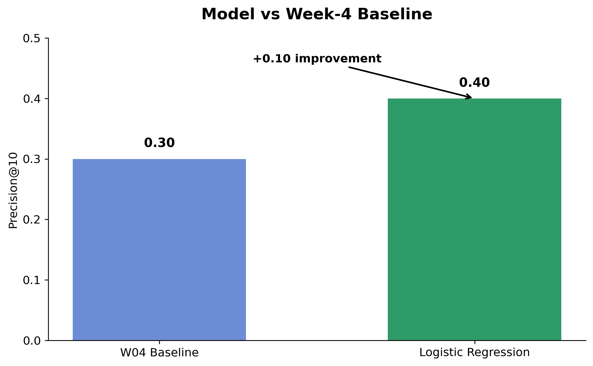
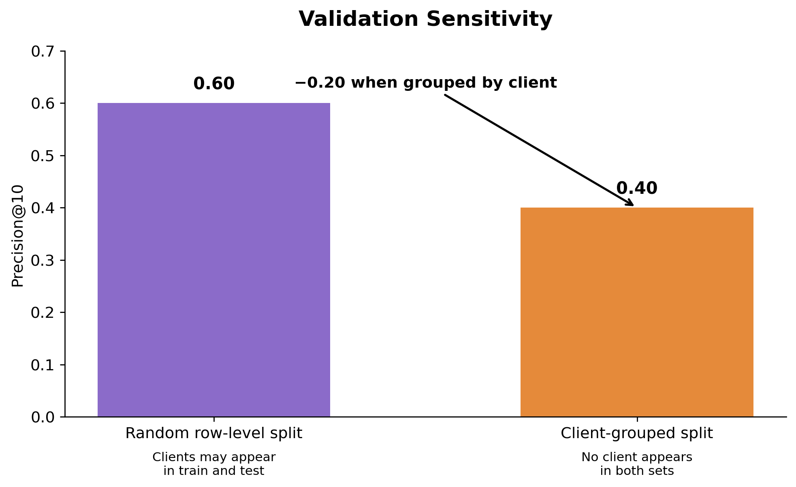
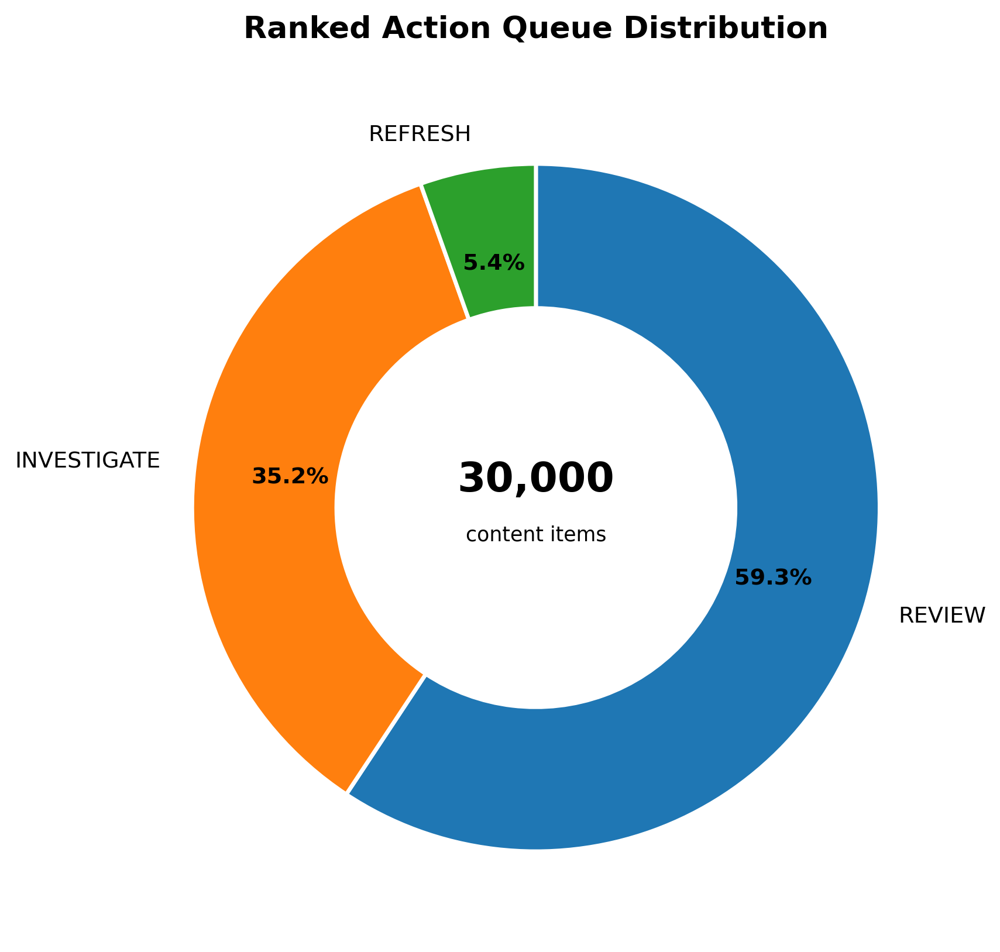

Abstract
This study asks whether observable content and search-performance signals can provide a useful ranking signal for identifying content items that may warrant review for potential decline. The analysis uses a 30,000-record modeling dataset spanning 32 pseudonymized clients and eight observable features related to freshness, visibility, engagement, content length, and search-market signals. A Logistic Regression model was compared with a transparent Week-4 baseline and evaluated using both a random row-level split and a stricter client-grouped split. The model measured 0.40 Precision@10 under client-grouped validation, compared with 0.30 for the Week-4 baseline, while the random split produced a higher 0.60 result that was treated as a diagnostic rather than the primary generalization claim. The resulting score and action queue are intended as decision-support for human content review, not as an autonomous content-action system or evidence of causal effects.
1. Introduction / Problem
Content teams often have more pages to review than they can inspect manually. The practical question is therefore not simply whether a page is performing well or poorly, but which pages deserve attention first.
This project approaches that problem as a ranking and decision-support task. Each content item is assigned a model score representing its estimated probability of belonging to the declining class. The scores can then be used to prioritize items for human review.
A false positive can consume editorial resources on a page that does not require intervention. A false negative can cause a potentially important page to receive less attention than it otherwise might. Machine learning is useful here because several observable signals can be considered simultaneously.
2. Data
The modeling dataset used for this analysis contains 30,000 content records across 32 clients. Client and content identifiers are pseudonymous and were not used as predictive features.
The target is derived from the recent 30-day trend relative to the preceding 30-day period. A content item is classified as declining when the corresponding observed trend direction is down.
Model features
| Feature | Role |
|---|---|
| days_since_last_update | Content freshness |
| impressions_90d | Observed visibility |
| ctr | Observed engagement |
| avg_position | Observed search position |
| word_count | Content length |
| search_volume | Search-market signal |
| competition | Search competition signal |
| cpc | Search-market signal |
What was excluded
Target-derived fields including trend_direction and trend_pct were excluded. The target itself and the decision-derived is_declining_label were also not used as model inputs.
Client identifiers were used for grouped validation only. They were never treated as predictive features.
3. Methodology
Model
Logistic Regression was selected because this is a binary classification problem and the resulting coefficients provide an interpretable view of the signals used by the model.
The preprocessing pipeline uses median imputation, feature standardization, and Logistic Regression with max_iter=1000 and random_state=42.
Evaluation metric
The primary metric is Precision@10. This reflects the practical use case: ranking a small set of content items for initial human review.
Validation design
Two validation designs were examined. A random row-level split was used as a reference, while a client-grouped split was used as the more conservative evaluation because no client appears in both its training and test sets.
Leakage controls
A deliberate leakage experiment added trend_pct, a target-related feature, to the model. Precision@10 increased to 1.00. This result was not treated as an improvement; it was used as a receipt showing how target-derived information can artificially inflate performance.
The final model therefore excludes target-derived features. Potential temporal overlap involving 90-day signals was also flagged for review against an exact prediction timestamp rather than being presented as proven leakage.
4. Results


Model versus baseline
| Approach | Precision@10 |
|---|---|
| Week-4 baseline | 0.30 |
| Logistic Regression | 0.40 |
Validation comparison
| Evaluation design | Test rows | Test base rate | Precision@10 |
|---|---|---|---|
| Random row-level | 6,000 | 0.542 | 0.60 |
| Client-grouped | 6,163 | 0.511 | 0.40 |
There were 0 clients shared between the grouped training and test sets. This makes the grouped result the more conservative measure of performance on clients not observed during training.
5. Interpretation
The fitted model relied most strongly, by absolute coefficient magnitude, on CTR, content freshness, and word count.
| Feature | Coefficient | Observed model direction |
|---|---|---|
| ctr | -0.197 | Negative |
| days_since_last_update | 0.189 | Positive |
| word_count | 0.133 | Positive |
These coefficients describe associations learned by the fitted model. They do not show that changing any individual feature will cause the target outcome to change.
The analysis also produced false positives and false negatives, including predictions close to the classification boundary. This indicates that the available signals do not perfectly separate declining and non-declining content.
The study therefore does not establish that refreshing content, increasing word count, improving CTR, or changing another individual feature will cause better search performance.
6. Limitations & Honest Framing
Observational evidence
The analysis observes patterns in the available data. It does not use a controlled intervention, so it cannot establish causal effects.
Validation sensitivity
Random row-level validation produced a higher measured result than client-grouped validation. The grouped result is therefore used as the more conservative generalization claim.
Temporal overlap
Some 90-day signals were flagged for temporal-overlap review. Exact feature availability relative to the prediction timestamp should be confirmed before production use.
Human judgment remains necessary
Model scores cannot capture every editorial, business, legal, brand, or search-intent consideration needed for a content decision.
7. Ranked Recommendations
The model output was converted into a ranked action queue containing 30,000 content items. The queue is intended to prioritize human attention rather than execute content changes automatically.

| Action | Records | Share |
|---|---|---|
| REVIEW | 17,790 | 59.30% |
| INVESTIGATE | 10,576 | 35.25% |
| REFRESH | 1,634 | 5.45% |
1. Review potential decline signals
Start with items receiving the REVIEW designation. Verify the observed signals and determine whether the page actually requires attention.
2. Investigate fresh content showing decline signals
The FRESH_DECLINING reason code accounts for 10,576 items. Review search intent, recent changes, page purpose, and performance context before considering intervention.
3. Consider stale, visible content for closer review
The STALE_HIGH_VISIBILITY category contains 1,634 items. These pages may deserve closer human inspection before a possible refresh.
Recommended workflow
Human-review requirements
- Check current page relevance.
- Verify observed performance signals.
- Check recent content changes.
- Review search intent and page purpose.
- Check business, editorial, legal, and brand context.
- Assess effort versus potential value.
What should not be automated
- Automatic publishing or rewriting.
- Automatic deletion or redirection.
- Automatic changes to factual or sensitive claims.
- Automatic legal, medical, or financial decisions.
- Treating the action score as causal evidence.
- Overriding human reviewers.
No content action should be executed solely from the queue. A human reviewer must make the final decision.
8. Reproducibility
The project is organized as a sequence of notebooks covering baseline construction, model training, validation auditing, and action-playbook development.
Key notebooks
- capstone.ipynb — final capstone analysis and paper artifacts
- w06_validation_audit.ipynb — grouped validation, leakage audit, and error analysis
- w07_action_playbook.ipynb — ranked action queue, human-review rules, and monitoring guidance
Key evaluation receipts
- Week-4 baseline Precision@10: 0.30
- Random row-level Precision@10: 0.60
- Client-grouped Precision@10: 0.40
- Random test base rate: 0.542
- Grouped test base rate: 0.511
- Clients shared between grouped train/test: 0
- Deliberate leakage test with trend_pct: 1.00
Action-playbook artifact
The Week-7 notebook generates the ranked action queue at:
work/outputs/ranked_action_queue.csv
The queue contains 30,000 rows and 9 exported columns. It is regenerated by the notebook rather than treated as a manually maintained dataset.
The complete project repository is available on GitHub .
9. Acknowledgments & Data Credit
Built on the FlyRank ML Internship dataset.
Data source: FlyRank